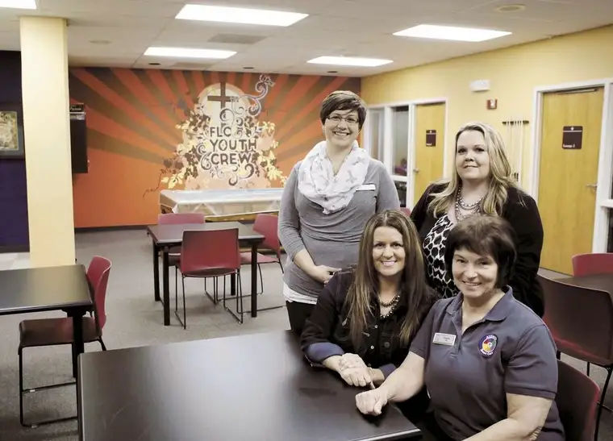

 |
| From left, Katie Gross, Bev Gravdahl, Melanie May and Gayle Kuhn host adult day care in this room at First Lutheran Church in Fargo. They have also started a support group for families and sufferers of memory loss. Michael Vosburg / Forum Photo Editor |
{kind=link}
Faith Conversations: ‘The Gathering’ brings soul into respite care
By Roxane B. Salonen
FARGO – Several months ago, Katie Gross, a parish nurse at First Lutheran Church here, was approached by a parishioner about something weighing heavy on his heart.
His wife recently had been diagnosed with mild cognitive impairment that seemed to be progressing into Alzheimer’s disease, and he was scrambling for ways to cope.
He shared with her some of the tough questions he’d been asking himself. “A partner I’ve had for 50 years is essentially leaving me, but she’s still there,” he’d told Gross. “How can I do things for her, and how is God talking to me, and how shall I talk to God?”
Knowing the soul needs tending in such times, Gross decided it was time to take action.
“We discussed the model of ‘Memory Café’ that is taking place in the Twin Cities, and whether we could bring something similar to the Fargo-Moorhead area,” Gross said.
Memory Café involves a regular gathering of people affected by memory loss and their care companions in a safe, supportive and comfortable, non-institutionalized environment, such as a coffee shop, museum or library.
In her research, Gross couldn’t find anything comparable to this in the state of North Dakota, despite the growing need.
Several weeks later, she received a call from Bev Gravdahl, a friend and fellow parish nurse from Olivet Lutheran Church, who had launched a home health care business.
“She spun the idea of doing an adult day program in a church,” Gross said, adding that Gravdahl suggested their mutual friend and colleague Melanie May to help with the “care receiving” part.
Apparently, Gravdahl and May had been dreaming of such an opportunity for three years but needed the right space. First Lutheran had and was happy to provide that space.
“Though there are services in town that provide adult respite care,” Gross said, “with this, we can foster the faith aspect and keep it very whole person – mind, body and spirit – and support the caregivers, too.”
A place to gather
Since mid-September, “The Gathering” has been meeting from noon to 5 p.m. every Tuesday.
“Participants are dropped off by their loved ones, and we have a calendar of events to nurture mind, body and spirit,” Gross said, “so we have Bible trivia, we watch reminiscing movies and listen to music that they would have been brought up with, along with other activities.”
Spiritual nourishment is also a focus, with prayer support and pastoral care offered as needed. Caregivers can stay and participate in a support group, run errands, or do a little of each.
The service is fee-based, but those with financial needs can inquire about ways to make it feasible.
May emphasized that all aspects of a person need to be considered when approaching health.
“We felt that the spiritual part wasn’t being nurtured as much as it could be, and spirituality is important to most elderly people. It made sense to start with our local churches,” May said.
Gravdahl said she’s heard from participants how much they appreciate that The Gathering takes place in a cozy, non-institutionalized setting. “We want to provide that sense of normalcy for people,” she said.
Memory-loss issues negatively impact families in many ways, May said. Some family members quit visiting their loved one because it’s so hard.
“They say, ‘They don’t even know who I am.’ I tell them, ‘But you still know who they are, so you still need to be a part of their lives.’ I think that’s something a lot of families struggle with.”
Regressing in mind, not spirit
These issues can sometimes be addressed best with a spiritual response.
“The soul – that’s where everything is held in them. They’re still in there,” May said. “You need spirituality to cope with all those losses of self-esteem, social interaction and independence.”
May said memory loss can sometimes cause a regression to a younger period in the affected person’s life.
“If they’ve had a happy childhood, they may return to a simpler, childlike faith,” she says. “That can be a positive, and hopefully going back to that innocence can make some of their last years less confusing and fear-filled.”
The Gathering is meant to help lighten the burden of everyone involved.
“The soul cannot be diminished by a disease damaging the physical body,” May said. “We respect the dignity and wholeness of their lives, regardless of how their mind and brain are functioning.”
Everyone a caregiver
Gravdahl said most people will be a caregiver at some point in their lives, just as she was when her grandmother was dying of cancer several years back.
“We do this out of love, of course, but it can really affect your own health as well,” she said. “We were fortunate to have a very loving, supporting family, but there might be families who don’t have that support or the resources we did.”
The Gathering can help provide that, as well as connect people with tangible ideas for how to cope.
“It could happen to anybody and it could happen overnight. We want to be able to be available to help in those times,” Gravdahl said. “God calls us to care for one another, so anytime we’re able to do that, it’s an honor and privilege.”
The Gathering isn’t limited to those affected by memory loss, though that will be a natural area of focus, but for anybody needing extra support in caring for a loved one with an acute illness or chronic-health issue.
“It’s not a rehab center,” Gravdahl said, “but more just a place to come and fill their cups – on both ends of the spectrum.”
If you go
What: Caring for the Caregiver resource event
When: 10 a.m. to 12:30 p.m. Nov. 15
Where: First Lutheran Celebration Hall, 619 Broadway, Fargo
Tickets: Tickets are $5 and include continental breakfast. RSVP at www.flcfargo.org or call Katie Gross, (701) 235-7389.